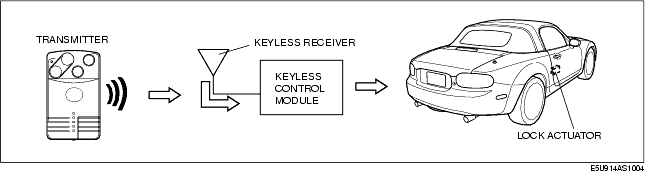
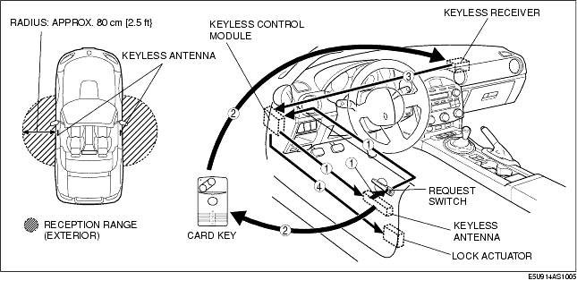
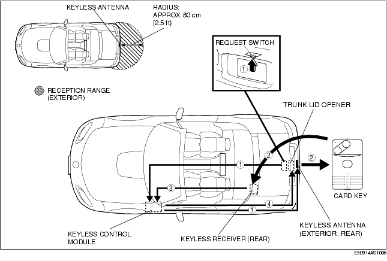

Technical Guide ➭ BODY & ACCESSORIES ➭ SECURITY AND LOCKS[ADVANCED KEYLESS SYSTEM] ➭ KEYLESS ENTRY SYSTEM OPERATION
KEYLESS ENTRY SYSTEM OPERATION
id0914b5102600
{: #wp1059776}
Normal Keyless Entry Function
Lock/unlock
*Note*{: #wp1059798}
• If any of the following conditions are met, the doors cannot be locked by operating the transmitter (card key).
- The auxiliary key is inserted in the ignition key cylinder. {: #wp1059816}- The start knob is not in the LOCK position. {: #wp1059830}- The start knob is being pressed. {: #wp1059840}- Any door is open.
• If any of the following conditions are met, the doors cannot be unlocked by operating the transmitter (card key).
- The auxiliary key is inserted in the ignition key cylinder. {: #wp1059870}- The start knob is not in the LOCK position. {: #wp1059884}- The start knob is being pressed.
-
When the transmitter (card key) is operated, the card key sends ID data and rolling code. They are received by the keyless receiver and sent to the keyless control module.
-
When the keyless control module receives a lock/unlock signal from the transmitter (card key) and verifies the ID, the signal is sent to the all lock actuators activate to lock/unlock.
-
The keyless control module operates the hazard warning lights flash to flash according to lock/unlock signal from the transmitter (card key).
- When the LOCK button is pressed, the hazard warning lights flash once. {: #wp1059940}- When the UNLOCK button is operated, the hazard warning lights flash twice.

Advanced Keyless Entry Function
Door lock/unlock
*Note*{: #wp1060003}
• If any of the following conditions are not met, the doors cannot be locked by operating the request switch.
- The card key is not inside the vehicle. {: #wp1060021}- All doors and trunk lid are closed. {: #wp1060035}- The auxiliary key is not inserted in the ignition key cylinder. {: #wp1060045}- The start knob is in the LOCK position and not being pressed. {: #wp1060055}- The card key is within the reception range outside the vehicle.
• If any of the following conditions are not met, the doors cannot be unlocked by operating the request switch.
- The auxiliary key is not inserted in the ignition key cylinder. {: #wp1060085}- The start knob is in the LOCK position and not being pressed. {: #wp1060099}- The card key is within the reception range outside the vehicle.
-
When a request switch is pressed, the keyless control module sends a request signal from the keyless antenna. The request signal is sent to the area around the door that the request switch is pressed, and the signal is sent to the cabin area.
-
When the card key receives a request signal, the card key sends back ID data.
-
The ID data is received at the keyless receiver, and sent to the keyless control module.
-
When the ID data is verified by the keyless control module and the card key is determined to be outside the vehicle, a signal is sent to the lock actuators are activated to lock/unlock.
-
The keyless control module commands the hazard warning lights to flash.
- When the doors are locked, the hazard warning lights flash once. {: #wp1060171}- When the doors are unlocked, the hazard warning lights flash twice.

Trunk lid opening
*Note*{: #wp1060222}
• If any of the following conditions are not met, the trunk lid cannot be opened by operating the request switch.
- The auxiliary key is not inserted in the ignition key cylinder. {: #wp1060240}- The start knob is in the LOCK position and not being pressed. {: #wp1060254}- The card key is within the reception range outside the vehicle. {: #wp1060264}- The trunk lid opener cancel switch is in the ON position.
-
When the trunk lid request switch is pressed and held for 1 s or more, the keyless control module sends a request signal from the keyless antenna. The request signal is sent to the area around the trunk lid, and the signal is sent to the rear area.
-
When the card key receives a request signal, the card key sends back ID data.
-
The ID data is received at the keyless receiver (rear), and sent to the keyless control module.
-
When the ID data is verified by the keyless control module and the card key is determined to be outside the vehicle, a signal is sent to the trunk lid opener to open the trunk lid.
-
The keyless control module commands the hazard warning lights to flash.
- When the trunk lid is unlocked, the hazard warning lights flash twice.

Auto re-lock function
• The auto re-lock function automatically locks the doors if any of the following operations are performed within approx. 30 s after the UNLOCK button of the card key is pressed, or after the request switch is pressed to unlock the doors. {: #wp1060376}- A door or the trunk lid is opened. {: #wp1060391}- The auxiliary key is inserted in the ignition key cylinder. {: #wp1060405}- The start knob is pressed. {: #wp1060415}- The transmitter (card key) is operated. (If the UNLOCK button is pressed, the timer is reset.) {: #wp1060425}- A request switch is operated.
Out-of-area (reception area) autolock function
• When all doors are closed and the driver is out of the reception area carrying the card key, the doors are automatically locked. (Initial setting is OFF.)
- When all the following conditions are met and all doors are closed after any door or the trunk lid is open, the keyless beeper sound is heard and the function starts operation. (The doors are not locked at this time.)
- The card key is not inside the vehicle. {: #wp1060481}- The card key is within the reception area outside the vehicle. {: #wp1060495}- The auxiliary key is not inserted in the ignition key cylinder. {: #wp1060505}- The start knob is in the LOCK position, and not being pressed.
-
After the operation has started, the card key is monitored within the reception area by the keyless antenna. After about 2 s from where the card key has been determined to be out of the reception area, all lock actuators activate to lock. If approx. 30 s have passed since the operation started, the doors also locks regardless of whether the card key is within or out of the reception area.
-
The hazard warning light flashes once and keyless beep spund will be heard once at the same time the door locks.